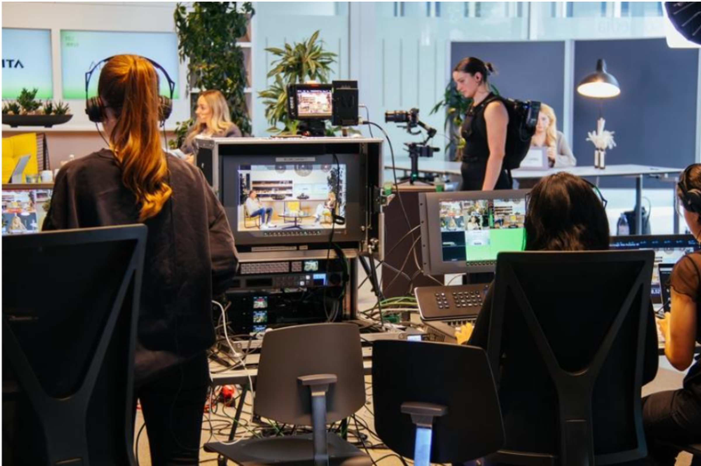

Alfavita
Im Rahmen meines Studiums im Hauptfach Live Communication realisierte ich gemeinsam mit vier
Mitstudierenden meinen ersten Livestream-Event für Alfavita. In meiner Rolle als Technische
Leiterin war ich bereits in der Vorbereitungsphase für die Entwicklung eines technischen
Gesamtkonzepts verantwortlich. Dazu gehörten unter anderem das Design der Einblender sowie
die Organisation und Durchführung von Proben, um einen reibungslosen Ablauf sicherzustellen.
Am Eventtag selbst übernahm ich die Leitung des Livestreams und koordinierte die technischen
Abläufe in Echtzeit. So entstand eine professionelle Übertragung, bei der Vorbereitung,
Teamarbeit und technisches Know-how nahtlos ineinandergreifen mussten.
Du willst mehr darüber erfahren?
Let's get in Touch